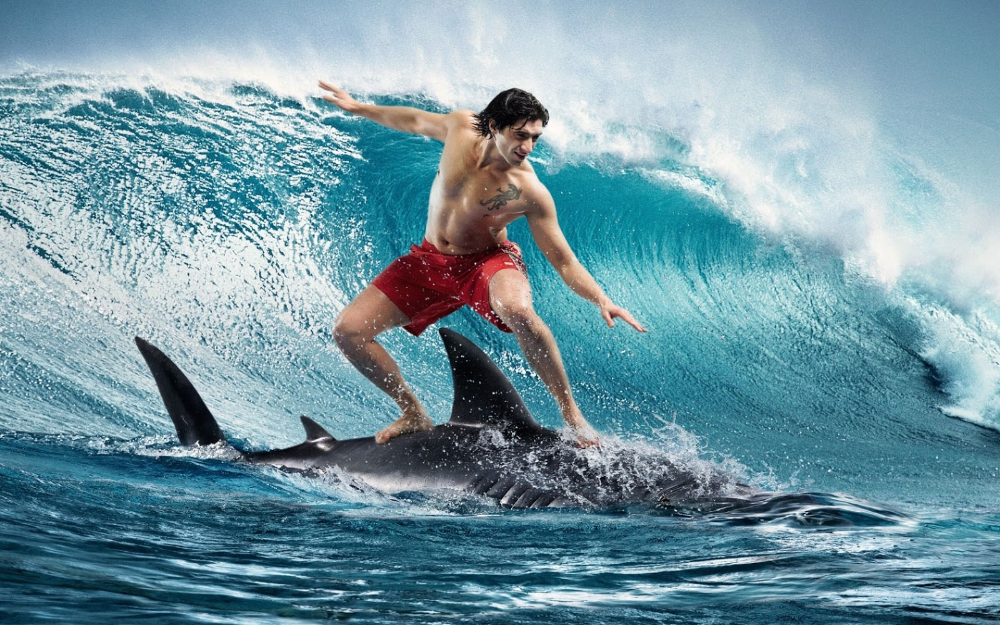

Surf y tiburones
13/05/2017 - 12:11 CEST

Un surfista espera flotando sobre la tabla a menos de 200 metros de la playa. El agua está un poco turbia debido a las lluvias que han caído el último día y no queda más de una hora de luz, pero las olas son fantásticas. El sol se ha convertido en una bola naranja a cuatro dedos sobre la línea del horizonte que marca el mar, y todo es calma. De repente, una violenta sacudida arroja al surfista de su tabla, no sabe lo que ha pasado, no ve nada que lo haya golpeado. Nota a su alrededor el agua más caliente y se da cuenta de que su propia sangre le envuelve. Alarmado, no sabe dónde está herido ni de qué gravedad. Intenta alcanzar la playa desesperadamente.
Este es el caso típico de ataque de tiburón. La mayoría de la gente que sufre un ataque no ve al animal ni suele sufrir más de un mordisco. Los pocos casos que acaban en muerte de la víctima son por desangramiento o por la conmoción al verse envuelto en semejante situación, si no consigue atención médica en los primeros instantes. Casi nadie es partido en dos o devorado, dado que el hombre no se encuentra entre las presas naturales de los tiburones.
De todos los incidentes con tiburones en el pasado año 2016, los surfistas se llevaron la peor parte copando el 58 % de los ataques, los que menos problemas tuvieron con los tiburones fueron los buceadores que solo sufrieron un ataque. La razón de que los surfistas sean el grupo que más ataques concentren es que son los que más tiempo pasan en el agua, justo en la zona preferida por los tiburones, la rompiente, y realizando actividades que despiertan los sentidos de los tiburones: patadas, chapoteos, remar con las manos o caer estrepitosamente de la tabla. La “buena” noticia es que el año pasado 81 personas fueron atacadas por un tiburón, pero solo cuatro murieron. Y es que es mucho más probable morir ahogado, 132 veces más, o golpeado por una embarcación en el mar, hasta 290 veces más, que ser atacado por un tiburón. Por cada muerte por ataque de un tiburón, mueren 1.000 ciclistas, y uno tiene el doble de posibilidades en su vida de morir a zarpas de un oso que ver a un tiburón como le hinca el diente, imágenes ambas algo perturbadoras.